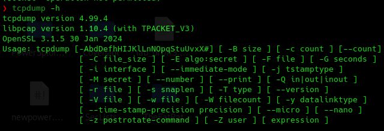

TCPDump
Se diferencia de wireshark en que utiliza un interfaz de consola de comandos.

Estas son solo algunas de las opciones que ofrece, en su documentación se pueden encontrar muchas más.
- Mostrar interfaces de red:
sudo tcpdump -D
- Capturar en interfaz de red:
sudo tcpdump -i eth0

- Mostrar mas información:
sudo tcpdump -v -i eth0
- Filtrar protocolos:
sudo tcpdump icmp -i eth0
- Filtrar por dirección del host:
sudo tcpdump host 185.230.63.107 -i eth0

- Guardar la captura para ser posteriormente analizada con Wireshark:
sudo tcpdump -i eth0 -w Desktop/capture.pcap
- Abrir la captura pero con TCPDump y filtrar protocolos:
sudo nmap -n port 53 -v -r capture.pcap
sudo nmap -n port 80 -v -r capture.pcap | grep gamivo.com